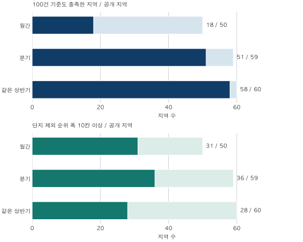

아파트 가격표 읽기 · 상승률 순위의 조건
아파트 상승률 순위, 기간과 거래 건수를 바꾸면 얼마나 달라질까?
같은 50지역에서도 월간·분기·같은 상반기의 중앙값 변화율 순위는 달랐습니다. 시작 가격과 거래 건수, 평균·중앙값, 한 단지 제외 민감도를 함께 확인하는 순위표 읽기입니다.
분석 기간 · 2026.5→6 / 2026년 1→2분기 / 2025→2026 상반기 | 보유 자료 스냅샷 생성 · 2026-10-04
아파트 상승률 순위에서 높은 지역을 찾았다면, 먼저 비교 기간과 거래 건수를 확인해야 합니다. 서울·수집 경기의 전용 84㎡대 거래를 세 기간으로 비교하면, 같은 50지역 중 49지역의 중앙값 변화율 순위가 월간과 분기에서 달랐습니다. 순위 차이 자체가 오류는 아닙니다. 서로 다른 기간에 거래된 집을 비교한 결과입니다.
기간만 바꾸면 순위도 달라지나요?
이 자료에서는 달라졌습니다. 월간·분기·같은 상반기 세 비교의 공통 50지역에서 중앙값 변화율의 순위 구간이 다른 지역은 어느 두 비교를 짝지어도 49지역입니다. 한 표의 후보가 더 많아서 생긴 차이를 피하려고, 아래 표는 같은 50지역 안에서 순위를 다시 계산했습니다.
비교 대상은 전용면적 84㎡ 이상 85㎡ 미만의 관측 매매 계약입니다. 서울 25구와 이 블로그가 수집하는 경기 36지역을 살폈으며 인천과 경기 일부 지역은 포함하지 않습니다. 각 기간에 거래된 집의 중앙값을 구했으므로, 같은 주택을 두 번 거래한 가격지수는 아닙니다.
중앙값은 거래금액을 낮은 순으로 놓았을 때 가운데 값이며, 짝수 건이면 가운데 두 값의 평균입니다. 분기와 상반기는 해당 기간의 거래를 모두 모아 계산합니다. 월별 중앙값의 평균이나 중앙값으로 대신하지 않습니다.
| 비교 | 시작 → 끝 | 읽을 때의 차이 |
|---|---|---|
| 월간 | 2026.5 → 2026.6 | 두 달에 거래된 집의 구성에 민감 |
| 분기 | 2026.1~3 → 2026.4~6 | 각 3개월의 거래를 합친 대표값 |
| 같은 상반기 | 2025.1~6 → 2026.1~6 | 계절 범위를 맞췄지만 집의 구성은 다름 |
“월과 반기는 원래 다른 질문 아닌가요?”라는 반론이 맞습니다. 순위가 달라졌다는 사실만으로 월간 표가 틀렸다거나 반기 표가 더 정확하다고 결론 내릴 수 없습니다. 짧은 기간의 변화를 보려는지, 같은 계절의 전년과 비교하려는지 먼저 정해야 합니다.
공통 50지역의 중앙값 변화율 순위 모두 보기
지역 코드 순서로 나열했습니다. 숫자가 작을수록 이 후보 집합 안에서 변화율이 큽니다. 동률은 1·1·3 방식의 경쟁순위와 동률이 차지하는 구간을 함께 표시합니다. 예를 들어 2–3은 공동 2위 두 지역입니다. 모든 후보가 내렸다면 1위도 하락일 수 있습니다.
| 지역 | 월간 | 분기 | 같은 상반기 |
|---|---|---|---|
| 성동구 | 35 | 9 | 18 |
| 동대문구 | 19 | 14 | 7 |
| 중랑구 | 32 | 40 | 30–31 |
| 성북구 | 39 | 15 | 21 |
| 강북구 | 6 | 25 | 35 |
| 도봉구 | 45 | 45 | 22 |
| 은평구 | 40 | 44 | 38 |
| 서대문구 | 1 | 37 | 49 |
| 마포구 | 42 | 6 | 48 |
| 양천구 | 20 | 17 | 47 |
| 구로구 | 33 | 46 | 46 |
| 영등포구 | 47 | 11 | 28 |
| 동작구 | 29 | 12 | 10–11 |
| 관악구 | 2 | 42 | 10–11 |
| 서초구 | 50 | 1 | 14 |
| 강남구 | 26 | 4 | 1 |
| 송파구 | 48 | 2 | 4 |
| 강동구 | 44 | 3 | 30–31 |
| 수원시 장안구 | 34 | 50 | 17 |
| 수원시 권선구 | 28 | 10 | 29 |
| 수원시 팔달구 | 25 | 23 | 16 |
| 수원시 영통구 | 5 | 38 | 44 |
| 성남시 중원구 | 21 | 39 | 26 |
| 성남시 분당구 | 18 | 27 | 3 |
| 의정부시 | 30 | 34 | 36 |
| 안양시 만안구 | 9 | 35 | 33 |
| 안양시 동안구 | 8 | 36 | 13 |
| 부천시 원미구 | 31 | 30 | 42 |
| 부천시 소사구 | 46 | 26 | 37 |
| 광명시 | 17 | 22 | 50 |
| 평택시 | 4 | 16 | 43 |
| 안산시 단원구 | 10 | 32 | 23 |
| 고양시 덕양구 | 27 | 20 | 6 |
| 고양시 일산동구 | 22 | 29 | 5 |
| 고양시 일산서구 | 12 | 47 | 41 |
| 구리시 | 13 | 31 | 34 |
| 남양주시 | 23 | 49 | 2 |
| 군포시 | 14 | 48 | 32 |
| 의왕시 | 16 | 24 | 40 |
| 하남시 | 7 | 13 | 8 |
| 용인시 처인구 | 36 | 8 | 15 |
| 용인시 기흥구 | 15 | 21 | 19 |
| 용인시 수지구 | 38 | 7 | 12 |
| 파주시 | 11 | 41 | 27 |
| 김포시 | 41 | 43 | 39 |
| 화성시 만세구 | 43 | 33 | 45 |
| 화성시 효행구 | 49 | 18 | 25 |
| 화성시 병점구 | 3 | 19 | 9 |
| 화성시 동탄구 | 24 | 28 | 24 |
| 광주시 | 37 | 5 | 20 |
같이 5천만 원 올라도 상승률은 왜 다른가요?
나누는 시작 가격이 다르기 때문입니다. 가상 예시로 A가 5억 원에서 5억 5천만 원이 되면 10%, B가 10억 원에서 10억 5천만 원이 되면 5%입니다. 금액 증가는 같아도 비율 순서는 달라집니다.
변화율(%) = (끝 가격 ÷ 시작 가격 − 1) × 100
금액 증감 = 끝 가격 − 시작 가격
따라서 상승률 옆에는 시작·끝 가격과 금액 증감을 함께 놓아야 합니다. 낮은 시작값 때문에 높은 비율이 나올 수 있지만, 낮은 가격이 언제나 더 높은 상승률을 만든다는 뜻은 아닙니다. 실제 상승 금액도 함께 달라집니다.
평균과 중앙값의 선택도 순서에 영향을 줍니다. 평균은 거래금액 합계를 거래 건수로 나눈 값입니다. 이 자료에서 평균 변화율과 중앙값 변화율의 순위 구간이 다른 지역은 월간 46/50, 분기 58/59, 같은 상반기 57/60지역입니다. 평균은 비싼 거래의 영향을 더 받을 수 있고, 중앙값도 거래된 단지·층·주택 상태의 구성이 바뀌면 달라집니다. 둘 중 하나가 자동으로 ‘진짜 집값’이 되지는 않습니다.
계산을 직접 따라가려면 평균과 중앙값의 차이와 변화율의 분모와 기간를 함께 확인하세요.
거래가 많으면 순위를 믿어도 되나요?
거래가 적을 때의 부담을 줄일 수 있지만, 건수만으로 순위의 확실성을 보장하지는 못합니다. 이 글은 두 기간 각각 40건 이상·10단지 이상인 비교만 가격을 보여줍니다. 이는 공개·분석의 최소 기준이며 통계적 신뢰수준이 아닙니다.
| 비교 | 공개 지역 | 양쪽 100건도 충족 | 평균·중앙값 순위 다름 |
|---|---|---|---|
| 월간 | 50 | 18 | 46 |
| 분기 | 59 | 51 | 58 |
| 같은 상반기 | 60 | 58 | 57 |
100건 기준까지 적용하면 월간은 50지역 중 18지역만 남지만, 분기는 59지역 중 51지역, 같은 상반기는 60지역 중 58지역이 남습니다. 긴 기간은 거래를 더 모으지만 최근 변화가 섞여 보일 수 있습니다. 아래 표의 순위는 100건을 넘은 지역만 다시 정렬한 순위가 아닙니다.

건수가 특정 단지에 몰린 영향을 살피기 위해, 각 지역에서 한 단지를 양 기간 모두 제외하고 중앙값 변화율을 다시 계산했습니다. 다른 지역의 값은 고정했습니다. 제외한 뒤에도 양쪽 40건·10단지 기준을 유지하는 경우만 비교하며, 원래 순위도 범위에 포함했습니다.
| 비교 | 공개 지역 | 폭 10칸 이상 | 폭 10칸 미만 |
|---|---|---|---|
| 월간 | 50 | 31 | 19 |
| 분기 | 59 | 36 | 23 |
| 같은 상반기 | 60 | 28 | 32 |
월간 31/50지역, 분기 36/59지역, 같은 상반기 28/60지역에서 범위 폭이 10칸 이상이었습니다. 이는 원래 순위에서 한쪽으로 10칸 움직였다는 뜻과 다릅니다. 예를 들어 5~15위 범위의 폭은 10칸이며 원래 순위가 10위일 수 있습니다.
이 실험은 단지 구성에 대한 민감도를 보여줍니다. 한 단지가 실제 시장에서 사라졌을 때의 효과도, 모든 지역이 동시에 움직일 때의 범위도 아닙니다. 지원 기준을 깨는 삭제는 제외하므로 가능한 모든 극단을 보여주는 것도 아닙니다. 지역별 삭제 값이나 제외 단지명을 공개하지 않고 지역 수만 요약했습니다.
순위 옆에 어떤 숫자를 붙여야 하나요?
시작·끝 가격, 거래 건수, 금액과 비율의 변화, 비교 후보 수를 함께 붙입니다. 아래는 원래 살핀 61지역을 모두 남긴 표입니다. 표본 기준 미달은 낮은 순위나 0%가 아닙니다. 노원·강서의 월간 비교는 다른 공개 집계와 결합했을 때 작은 거래 집단이 드러날 수 있어 전체 수치를 함께 가렸습니다.
각 표의 순위는 그 표에서 공개되는 50·59·60지역 안의 순위입니다. 앞의 공통 50지역 표와 후보 수가 다릅니다. 모든 가격은 억 원, 변화율은 %로 소수 둘째 자리까지 표시했으며, 계산과 정렬은 반올림 전에 했습니다. 표시값이 같아도 순위가 다를 수 있습니다.
월간 전체 61지역 표 보기
| 지역 | 건수 시작 → 끝 | 중앙값 시작 | 중앙값 끝 | 중앙값 금액 차 | 중앙값 변화율 | 중앙값 순위 | 평균 시작 → 끝 | 평균 변화율 | 평균 순위 | 양쪽 100건 |
|---|---|---|---|---|---|---|---|---|---|---|
| 종로구 | 표본 기준 미달 | |||||||||
| 중구 | 표본 기준 미달 | |||||||||
| 용산구 | 표본 기준 미달 | |||||||||
| 성동구 | 74 → 41 | 18.85 | 18.70 | -0.15 | -0.80 | 35 | 19.24 → 18.86 | -1.97 | 41 | 미달 |
| 광진구 | 표본 기준 미달 | |||||||||
| 동대문구 | 114 → 85 | 11.45 | 11.90 | +0.45 | +3.93 | 19 | 11.66 → 12.48 | +7.01 | 11 | 미달 |
| 중랑구 | 107 → 69 | 7.50 | 7.50 | 0.00 | 0.00 | 32 | 7.84 → 8.09 | +3.15 | 24 | 미달 |
| 성북구 | 154 → 128 | 10.20 | 9.99 | -0.21 | -2.06 | 39 | 10.41 → 10.57 | +1.53 | 28 | 충족 |
| 강북구 | 88 → 44 | 7.43 | 8.03 | +0.60 | +8.08 | 6 | 7.62 → 8.18 | +7.30 | 9 | 미달 |
| 도봉구 | 101 → 90 | 6.55 | 6.24 | -0.31 | -4.73 | 45 | 6.96 → 6.92 | -0.58 | 34 | 미달 |
| 노원구 | 공동 공개 제한 | |||||||||
| 은평구 | 133 → 94 | 9.60 | 9.40 | -0.20 | -2.08 | 40 | 10.20 → 9.90 | -2.89 | 42 | 미달 |
| 서대문구 | 100 → 77 | 10.93 | 12.65 | +1.73 | +15.79 | 1 | 11.81 → 12.59 | +6.57 | 12 | 미달 |
| 마포구 | 89 → 49 | 15.50 | 14.90 | -0.60 | -3.87 | 42 | 16.32 → 16.67 | +2.16 | 26 | 미달 |
| 양천구 | 88 → 69 | 12.57 | 13.05 | +0.49 | +3.86 | 20 | 12.37 → 12.95 | +4.70 | 15 | 미달 |
| 강서구 | 공동 공개 제한 | |||||||||
| 구로구 | 147 → 91 | 7.89 | 7.88 | -0.01 | -0.13 | 33 | 8.42 → 9.03 | +7.23 | 10 | 미달 |
| 금천구 | 표본 기준 미달 | |||||||||
| 영등포구 | 85 → 68 | 14.45 | 13.35 | -1.10 | -7.61 | 47 | 13.98 → 13.81 | -1.23 | 36 | 미달 |
| 동작구 | 112 → 60 | 16.05 | 16.27 | +0.22 | +1.34 | 29 | 16.33 → 16.63 | +1.83 | 27 | 미달 |
| 관악구 | 87 → 47 | 9.60 | 10.80 | +1.20 | +12.50 | 2 | 9.65 → 10.58 | +9.60 | 1 | 미달 |
| 서초구 | 83 → 40 | 38.30 | 25.90 | -12.40 | -32.38 | 50 | 38.93 → 30.21 | -22.40 | 50 | 미달 |
| 강남구 | 88 → 42 | 30.88 | 31.58 | +0.71 | +2.28 | 26 | 30.20 → 28.92 | -4.25 | 46 | 미달 |
| 송파구 | 163 → 80 | 24.85 | 20.90 | -3.95 | -15.90 | 48 | 23.40 → 22.47 | -3.99 | 45 | 미달 |
| 강동구 | 186 → 87 | 16.55 | 15.80 | -0.75 | -4.53 | 44 | 16.57 → 15.99 | -3.45 | 44 | 미달 |
| 수원시 장안구 | 128 → 83 | 5.83 | 5.80 | -0.03 | -0.51 | 34 | 6.59 → 6.98 | +5.84 | 13 | 미달 |
| 수원시 권선구 | 160 → 213 | 5.92 | 6.00 | +0.08 | +1.35 | 28 | 5.50 → 5.70 | +3.58 | 22 | 충족 |
| 수원시 팔달구 | 66 → 71 | 7.23 | 7.40 | +0.18 | +2.42 | 25 | 7.21 → 7.79 | +8.06 | 5 | 미달 |
| 수원시 영통구 | 185 → 155 | 7.70 | 8.50 | +0.80 | +10.39 | 5 | 8.59 → 9.36 | +9.05 | 3 | 충족 |
| 성남시 수정구 | 표본 기준 미달 | |||||||||
| 성남시 중원구 | 43 → 44 | 8.67 | 8.99 | +0.32 | +3.63 | 21 | 9.02 → 9.25 | +2.51 | 25 | 미달 |
| 성남시 분당구 | 100 → 67 | 17.80 | 18.50 | +0.70 | +3.93 | 18 | 17.63 → 18.32 | +3.94 | 19 | 미달 |
| 의정부시 | 143 → 164 | 4.25 | 4.30 | +0.05 | +1.18 | 30 | 4.45 → 4.41 | -1.12 | 35 | 충족 |
| 안양시 만안구 | 74 → 78 | 6.39 | 6.80 | +0.41 | +6.42 | 9 | 6.67 → 7.18 | +7.59 | 7 | 미달 |
| 안양시 동안구 | 164 → 137 | 8.89 | 9.60 | +0.71 | +7.99 | 8 | 9.04 → 9.73 | +7.69 | 6 | 충족 |
| 부천시 원미구 | 116 → 124 | 6.95 | 7.00 | +0.06 | +0.79 | 31 | 7.14 → 7.47 | +4.60 | 16 | 충족 |
| 부천시 소사구 | 78 → 71 | 6.54 | 6.10 | -0.44 | -6.73 | 46 | 6.69 → 6.27 | -6.26 | 48 | 미달 |
| 부천시 오정구 | 표본 기준 미달 | |||||||||
| 광명시 | 111 → 66 | 8.45 | 8.84 | +0.39 | +4.62 | 17 | 9.42 → 9.78 | +3.87 | 21 | 미달 |
| 평택시 | 212 → 260 | 3.58 | 3.97 | +0.39 | +10.91 | 4 | 3.92 → 4.29 | +9.40 | 2 | 충족 |
| 안산시 상록구 | 표본 기준 미달 | |||||||||
| 안산시 단원구 | 74 → 58 | 5.12 | 5.43 | +0.31 | +6.06 | 10 | 5.65 → 5.47 | -3.30 | 43 | 미달 |
| 고양시 덕양구 | 218 → 218 | 7.33 | 7.48 | +0.15 | +2.05 | 27 | 7.41 → 7.38 | -0.36 | 33 | 충족 |
| 고양시 일산동구 | 66 → 64 | 6.11 | 6.29 | +0.18 | +2.95 | 22 | 6.93 → 6.81 | -1.70 | 39 | 미달 |
| 고양시 일산서구 | 76 → 70 | 4.00 | 4.23 | +0.23 | +5.76 | 12 | 4.80 → 4.54 | -5.30 | 47 | 미달 |
| 과천시 | 표본 기준 미달 | |||||||||
| 구리시 | 114 → 147 | 7.44 | 7.85 | +0.42 | +5.58 | 13 | 7.81 → 8.12 | +3.93 | 20 | 충족 |
| 남양주시 | 426 → 465 | 5.64 | 5.80 | +0.16 | +2.84 | 23 | 6.20 → 6.23 | +0.51 | 31 | 충족 |
| 군포시 | 58 → 55 | 5.31 | 5.60 | +0.29 | +5.46 | 14 | 6.18 → 6.06 | -1.93 | 40 | 미달 |
| 의왕시 | 122 → 78 | 7.89 | 8.27 | +0.38 | +4.82 | 16 | 8.12 → 8.51 | +4.83 | 14 | 미달 |
| 하남시 | 119 → 109 | 11.10 | 11.99 | +0.89 | +8.02 | 7 | 10.76 → 11.64 | +8.17 | 4 | 충족 |
| 용인시 처인구 | 68 → 81 | 4.33 | 4.28 | -0.05 | -1.04 | 36 | 4.42 → 4.47 | +1.27 | 29 | 미달 |
| 용인시 기흥구 | 345 → 513 | 6.20 | 6.50 | +0.30 | +4.84 | 15 | 6.71 → 7.01 | +4.41 | 18 | 충족 |
| 용인시 수지구 | 182 → 155 | 10.43 | 10.25 | -0.18 | -1.68 | 38 | 10.48 → 10.82 | +3.23 | 23 | 충족 |
| 파주시 | 211 → 178 | 3.90 | 4.13 | +0.23 | +5.77 | 11 | 4.36 → 4.55 | +4.47 | 17 | 충족 |
| 김포시 | 169 → 177 | 4.60 | 4.50 | -0.10 | -2.17 | 41 | 4.78 → 4.81 | +0.60 | 30 | 충족 |
| 화성시 만세구 | 47 → 63 | 4.05 | 3.87 | -0.18 | -4.44 | 43 | 4.12 → 4.06 | -1.43 | 38 | 미달 |
| 화성시 효행구 | 67 → 82 | 4.15 | 3.33 | -0.83 | -19.88 | 49 | 4.06 → 3.68 | -9.45 | 49 | 미달 |
| 화성시 병점구 | 133 → 192 | 4.45 | 4.95 | +0.50 | +11.24 | 3 | 5.22 → 5.61 | +7.51 | 8 | 충족 |
| 화성시 동탄구 | 500 → 663 | 7.60 | 7.80 | +0.20 | +2.63 | 24 | 8.45 → 8.44 | -0.03 | 32 | 충족 |
| 광주시 | 142 → 185 | 4.61 | 4.55 | -0.06 | -1.36 | 37 | 4.71 → 4.65 | -1.28 | 37 | 충족 |
분기 전체 61지역 표 보기
| 지역 | 건수 시작 → 끝 | 중앙값 시작 | 중앙값 끝 | 중앙값 금액 차 | 중앙값 변화율 | 중앙값 순위 | 평균 시작 → 끝 | 평균 변화율 | 평균 순위 | 양쪽 100건 |
|---|---|---|---|---|---|---|---|---|---|---|
| 종로구 | 42 → 46 | 12.27 | 12.00 | -0.27 | -2.23 | 51 | 13.07 → 15.79 | +20.79 | 1 | 미달 |
| 중구 | 59 → 74 | 12.45 | 16.50 | +4.05 | +32.53 | 3 | 14.14 → 15.66 | +10.73 | 4 | 미달 |
| 용산구 | 48 → 78 | 19.10 | 20.25 | +1.15 | +6.02 | 18 | 21.53 → 21.38 | -0.69 | 54 | 미달 |
| 성동구 | 121 → 192 | 17.00 | 18.50 | +1.50 | +8.82 | 12 | 18.19 → 19.00 | +4.41 | 25 | 충족 |
| 광진구 | 54 → 104 | 19.05 | 18.50 | -0.55 | -2.89 | 54 | 17.94 → 17.77 | -0.93 | 55 | 미달 |
| 동대문구 | 264 → 303 | 10.35 | 11.00 | +0.65 | +6.28 | 17 | 11.46 → 11.66 | +1.68 | 41 | 충족 |
| 중랑구 | 224 → 291 | 7.48 | 7.50 | +0.02 | +0.27 | 47 | 7.92 → 7.87 | -0.58 | 53 | 충족 |
| 성북구 | 404 → 435 | 9.44 | 10.00 | +0.57 | +5.99 | 19 | 9.85 → 10.27 | +4.28 | 28 | 충족 |
| 강북구 | 186 → 216 | 7.40 | 7.65 | +0.25 | +3.38 | 29 | 7.76 → 7.89 | +1.64 | 42 | 충족 |
| 도봉구 | 174 → 282 | 6.38 | 6.20 | -0.18 | -2.75 | 53 | 6.84 → 6.86 | +0.34 | 50 | 충족 |
| 노원구 | 367 → 435 | 8.37 | 8.60 | +0.23 | +2.75 | 31 | 8.48 → 8.70 | +2.61 | 35 | 충족 |
| 은평구 | 336 → 348 | 9.36 | 9.15 | -0.21 | -2.24 | 52 | 9.69 → 9.77 | +0.82 | 47 | 충족 |
| 서대문구 | 257 → 281 | 10.92 | 11.05 | +0.13 | +1.19 | 44 | 11.51 → 11.80 | +2.52 | 36 | 충족 |
| 마포구 | 130 → 222 | 13.40 | 15.88 | +2.48 | +18.47 | 7 | 15.42 → 16.91 | +9.63 | 6 | 충족 |
| 양천구 | 205 → 250 | 11.50 | 12.18 | +0.68 | +5.87 | 21 | 11.60 → 12.21 | +5.23 | 18 | 충족 |
| 강서구 | 336 → 390 | 10.23 | 10.50 | +0.28 | +2.69 | 33 | 10.81 → 11.00 | +1.72 | 40 | 충족 |
| 구로구 | 357 → 376 | 8.00 | 7.73 | -0.28 | -3.44 | 55 | 8.55 → 8.45 | -1.18 | 56 | 충족 |
| 금천구 | 91 → 125 | 7.20 | 7.30 | +0.10 | +1.39 | 43 | 7.84 → 8.06 | +2.73 | 33 | 미달 |
| 영등포구 | 249 → 265 | 12.30 | 13.30 | +1.00 | +8.13 | 14 | 12.74 → 13.60 | +6.80 | 14 | 충족 |
| 동작구 | 235 → 296 | 14.80 | 15.80 | +1.00 | +6.76 | 15 | 15.20 → 16.10 | +5.92 | 16 | 충족 |
| 관악구 | 177 → 217 | 10.45 | 10.40 | -0.05 | -0.48 | 49 | 9.90 → 10.10 | +2.06 | 39 | 충족 |
| 서초구 | 76 → 190 | 23.65 | 32.50 | +8.85 | +37.42 | 1 | 29.37 → 35.07 | +19.42 | 2 | 미달 |
| 강남구 | 72 → 218 | 26.50 | 32.00 | +5.50 | +20.75 | 5 | 28.54 → 30.68 | +7.49 | 11 | 미달 |
| 송파구 | 231 → 422 | 20.00 | 26.93 | +6.93 | +34.63 | 2 | 22.14 → 23.94 | +8.13 | 9 | 충족 |
| 강동구 | 241 → 386 | 13.20 | 16.10 | +2.90 | +21.97 | 4 | 13.87 → 16.20 | +16.75 | 3 | 충족 |
| 수원시 장안구 | 214 → 306 | 6.19 | 5.80 | -0.39 | -6.30 | 59 | 6.91 → 6.65 | -3.84 | 58 | 충족 |
| 수원시 권선구 | 472 → 530 | 5.35 | 5.80 | +0.45 | +8.41 | 13 | 5.32 → 5.55 | +4.33 | 26 | 충족 |
| 수원시 팔달구 | 172 → 217 | 6.84 | 7.15 | +0.31 | +4.53 | 27 | 7.20 → 7.28 | +1.08 | 45 | 충족 |
| 수원시 영통구 | 451 → 544 | 7.55 | 7.63 | +0.08 | +0.99 | 45 | 8.13 → 8.60 | +5.82 | 17 | 충족 |
| 성남시 수정구 | 101 → 108 | 8.90 | 10.48 | +1.58 | +17.70 | 8 | 10.32 → 11.32 | +9.65 | 5 | 충족 |
| 성남시 중원구 | 102 → 119 | 8.84 | 8.86 | +0.03 | +0.28 | 46 | 9.04 → 9.18 | +1.60 | 43 | 충족 |
| 성남시 분당구 | 148 → 262 | 17.48 | 17.95 | +0.48 | +2.72 | 32 | 17.16 → 17.81 | +3.77 | 30 | 충족 |
| 의정부시 | 389 → 425 | 4.08 | 4.15 | +0.07 | +1.72 | 40 | 4.32 → 4.35 | +0.81 | 48 | 충족 |
| 안양시 만안구 | 217 → 240 | 6.40 | 6.50 | +0.10 | +1.56 | 41 | 6.76 → 6.92 | +2.38 | 37 | 충족 |
| 안양시 동안구 | 327 → 476 | 8.87 | 9.00 | +0.13 | +1.47 | 42 | 9.21 → 9.23 | +0.22 | 51 | 충족 |
| 부천시 원미구 | 269 → 363 | 6.75 | 6.90 | +0.15 | +2.22 | 36 | 6.87 → 7.16 | +4.31 | 27 | 충족 |
| 부천시 소사구 | 162 → 207 | 6.00 | 6.17 | +0.17 | +2.83 | 30 | 6.27 → 6.32 | +0.87 | 46 | 충족 |
| 부천시 오정구 | 표본 기준 미달 | |||||||||
| 광명시 | 288 → 298 | 8.20 | 8.58 | +0.38 | +4.57 | 26 | 9.13 → 9.55 | +4.60 | 22 | 충족 |
| 평택시 | 719 → 710 | 3.40 | 3.60 | +0.20 | +5.88 | 20 | 3.71 → 4.01 | +8.26 | 8 | 충족 |
| 안산시 상록구 | 127 → 99 | 4.70 | 5.35 | +0.65 | +13.83 | 10 | 5.00 → 5.36 | +7.15 | 12 | 미달 |
| 안산시 단원구 | 182 → 186 | 5.30 | 5.42 | +0.12 | +2.17 | 38 | 5.61 → 5.68 | +1.36 | 44 | 충족 |
| 고양시 덕양구 | 472 → 638 | 7.00 | 7.34 | +0.34 | +4.79 | 24 | 7.10 → 7.36 | +3.64 | 31 | 충족 |
| 고양시 일산동구 | 176 → 178 | 5.99 | 6.14 | +0.15 | +2.51 | 35 | 6.41 → 6.74 | +5.15 | 20 | 충족 |
| 고양시 일산서구 | 172 → 208 | 4.10 | 3.95 | -0.15 | -3.66 | 56 | 4.57 → 4.49 | -1.65 | 57 | 충족 |
| 과천시 | 표본 기준 미달 | |||||||||
| 구리시 | 426 → 378 | 7.34 | 7.50 | +0.16 | +2.21 | 37 | 7.59 → 7.89 | +4.03 | 29 | 충족 |
| 남양주시 | 1,057 → 1,236 | 5.97 | 5.60 | -0.37 | -6.20 | 58 | 6.15 → 6.12 | -0.36 | 52 | 충족 |
| 군포시 | 181 → 175 | 5.68 | 5.47 | -0.21 | -3.70 | 57 | 6.63 → 6.17 | -7.00 | 59 | 충족 |
| 의왕시 | 233 → 349 | 7.80 | 8.15 | +0.35 | +4.49 | 28 | 7.99 → 8.41 | +5.18 | 19 | 충족 |
| 하남시 | 301 → 335 | 10.90 | 11.60 | +0.70 | +6.42 | 16 | 10.56 → 11.04 | +4.56 | 23 | 충족 |
| 용인시 처인구 | 254 → 214 | 3.90 | 4.28 | +0.38 | +9.68 | 11 | 4.13 → 4.38 | +6.14 | 15 | 충족 |
| 용인시 기흥구 | 1,082 → 1,208 | 6.00 | 6.28 | +0.28 | +4.67 | 25 | 6.35 → 6.79 | +6.83 | 13 | 충족 |
| 용인시 수지구 | 526 → 539 | 8.95 | 10.20 | +1.25 | +13.97 | 9 | 9.64 → 10.39 | +7.73 | 10 | 충족 |
| 파주시 | 500 → 575 | 3.99 | 3.99 | +0.01 | +0.13 | 48 | 4.28 → 4.39 | +2.69 | 34 | 충족 |
| 김포시 | 475 → 506 | 4.60 | 4.57 | -0.04 | -0.76 | 50 | 4.80 → 4.83 | +0.63 | 49 | 충족 |
| 화성시 만세구 | 161 → 172 | 3.95 | 4.03 | +0.08 | +1.90 | 39 | 4.02 → 4.13 | +2.91 | 32 | 충족 |
| 화성시 효행구 | 200 → 235 | 3.39 | 3.58 | +0.19 | +5.60 | 22 | 3.76 → 3.84 | +2.09 | 38 | 충족 |
| 화성시 병점구 | 348 → 455 | 4.27 | 4.50 | +0.24 | +5.51 | 23 | 5.05 → 5.30 | +4.94 | 21 | 충족 |
| 화성시 동탄구 | 1,008 → 1,508 | 7.46 | 7.65 | +0.19 | +2.55 | 34 | 8.03 → 8.39 | +4.41 | 24 | 충족 |
| 광주시 | 372 → 469 | 3.75 | 4.50 | +0.75 | +20.00 | 6 | 4.29 → 4.69 | +9.47 | 7 | 충족 |
같은 상반기 전체 61지역 표 보기
| 지역 | 건수 시작 → 끝 | 중앙값 시작 | 중앙값 끝 | 중앙값 금액 차 | 중앙값 변화율 | 중앙값 순위 | 평균 시작 → 끝 | 평균 변화율 | 평균 순위 | 양쪽 100건 |
|---|---|---|---|---|---|---|---|---|---|---|
| 종로구 | 107 → 88 | 13.70 | 12.23 | -1.48 | -10.77 | 59 | 16.43 → 14.49 | -11.81 | 60 | 미달 |
| 중구 | 173 → 133 | 13.20 | 16.10 | +2.90 | +21.97 | 5 | 13.29 → 14.99 | +12.81 | 19 | 충족 |
| 용산구 | 155 → 126 | 17.00 | 19.58 | +2.58 | +15.15 | 12 | 18.05 → 21.44 | +18.80 | 2 | 충족 |
| 성동구 | 898 → 313 | 16.39 | 18.00 | +1.61 | +9.82 | 23 | 16.97 → 18.69 | +10.09 | 24 | 충족 |
| 광진구 | 414 → 158 | 15.00 | 18.60 | +3.60 | +24.00 | 3 | 15.08 → 17.83 | +18.20 | 3 | 충족 |
| 동대문구 | 539 → 567 | 9.23 | 10.70 | +1.47 | +15.93 | 10 | 10.35 → 11.57 | +11.72 | 21 | 충족 |
| 중랑구 | 294 → 515 | 7.15 | 7.50 | +0.35 | +4.90 | 37–38 | 7.70 → 7.89 | +2.47 | 48 | 충족 |
| 성북구 | 687 → 839 | 8.90 | 9.75 | +0.85 | +9.55 | 26 | 9.23 → 10.07 | +9.05 | 28 | 충족 |
| 강북구 | 191 → 402 | 7.20 | 7.50 | +0.30 | +4.17 | 43 | 7.25 → 7.83 | +7.97 | 32 | 충족 |
| 도봉구 | 251 → 456 | 5.78 | 6.25 | +0.47 | +8.13 | 28 | 6.44 → 6.85 | +6.39 | 34 | 충족 |
| 노원구 | 469 → 802 | 8.10 | 8.50 | +0.40 | +4.94 | 36 | 8.22 → 8.60 | +4.63 | 41 | 충족 |
| 은평구 | 425 → 684 | 8.98 | 9.29 | +0.31 | +3.42 | 46 | 9.34 → 9.74 | +4.21 | 44 | 충족 |
| 서대문구 | 604 → 538 | 11.90 | 10.99 | -0.91 | -7.65 | 57 | 11.62 → 11.66 | +0.38 | 54 | 충족 |
| 마포구 | 844 → 352 | 16.25 | 15.30 | -0.95 | -5.85 | 56 | 16.38 → 16.36 | -0.12 | 56 | 충족 |
| 양천구 | 500 → 455 | 12.50 | 11.90 | -0.60 | -4.80 | 55 | 12.29 → 11.94 | -2.89 | 59 | 충족 |
| 강서구 | 555 → 726 | 10.00 | 10.44 | +0.44 | +4.40 | 41 | 10.52 → 10.91 | +3.73 | 46 | 충족 |
| 구로구 | 486 → 733 | 8.10 | 7.85 | -0.25 | -3.09 | 54 | 8.47 → 8.50 | +0.30 | 55 | 충족 |
| 금천구 | 115 → 216 | 6.45 | 7.20 | +0.75 | +11.63 | 21 | 7.06 → 7.97 | +12.88 | 17 | 충족 |
| 영등포구 | 696 → 514 | 12.20 | 12.90 | +0.70 | +5.74 | 34 | 12.44 → 13.18 | +5.99 | 36 | 충족 |
| 동작구 | 1,021 → 531 | 13.30 | 15.20 | +1.90 | +14.29 | 14–15 | 13.92 → 15.71 | +12.86 | 18 | 충족 |
| 관악구 | 345 → 394 | 9.10 | 10.40 | +1.30 | +14.29 | 14–15 | 9.17 → 10.01 | +9.19 | 27 | 충족 |
| 서초구 | 588 → 266 | 27.40 | 30.98 | +3.58 | +13.05 | 18 | 28.62 → 33.44 | +16.84 | 5 | 충족 |
| 강남구 | 554 → 290 | 25.00 | 31.50 | +6.50 | +26.00 | 1 | 25.91 → 30.15 | +16.38 | 7 | 충족 |
| 송파구 | 991 → 653 | 19.75 | 23.80 | +4.05 | +20.51 | 6 | 20.38 → 23.30 | +14.35 | 13 | 충족 |
| 강동구 | 878 → 627 | 14.30 | 15.00 | +0.70 | +4.90 | 37–38 | 13.83 → 15.30 | +10.69 | 23 | 충족 |
| 수원시 장안구 | 360 → 520 | 5.36 | 5.97 | +0.61 | +11.38 | 22 | 6.06 → 6.75 | +11.53 | 22 | 충족 |
| 수원시 권선구 | 553 → 1,002 | 5.30 | 5.60 | +0.30 | +5.66 | 35 | 5.18 → 5.44 | +5.10 | 38 | 충족 |
| 수원시 팔달구 | 224 → 389 | 6.26 | 7.00 | +0.74 | +11.82 | 20 | 6.38 → 7.25 | +13.60 | 16 | 충족 |
| 수원시 영통구 | 820 → 995 | 7.70 | 7.60 | -0.10 | -1.30 | 52 | 8.59 → 8.38 | -2.40 | 57 | 충족 |
| 성남시 수정구 | 166 → 209 | 10.70 | 9.50 | -1.20 | -11.21 | 60 | 10.61 → 10.84 | +2.16 | 50 | 충족 |
| 성남시 중원구 | 148 → 221 | 8.28 | 8.86 | +0.59 | +7.07 | 32 | 8.69 → 9.12 | +4.86 | 40 | 충족 |
| 성남시 분당구 | 685 → 410 | 14.40 | 17.70 | +3.30 | +22.92 | 4 | 14.77 → 17.58 | +19.02 | 1 | 충족 |
| 의정부시 | 699 → 814 | 3.95 | 4.10 | +0.15 | +3.80 | 44 | 4.13 → 4.34 | +5.11 | 37 | 충족 |
| 안양시 만안구 | 263 → 457 | 6.13 | 6.40 | +0.27 | +4.40 | 40 | 6.54 → 6.84 | +4.61 | 42 | 충족 |
| 안양시 동안구 | 781 → 803 | 7.95 | 9.00 | +1.05 | +13.21 | 17 | 8.22 → 9.22 | +12.16 | 20 | 충족 |
| 부천시 원미구 | 366 → 632 | 6.80 | 6.80 | 0.00 | 0.00 | 50 | 6.95 → 7.04 | +1.20 | 53 | 충족 |
| 부천시 소사구 | 241 → 369 | 5.89 | 6.10 | +0.21 | +3.57 | 45 | 6.03 → 6.30 | +4.43 | 43 | 충족 |
| 부천시 오정구 | 표본 기준 미달 | |||||||||
| 광명시 | 441 → 586 | 9.25 | 8.42 | -0.84 | -9.03 | 58 | 9.16 → 9.34 | +1.97 | 51 | 충족 |
| 평택시 | 1,124 → 1,429 | 3.53 | 3.50 | -0.03 | -0.85 | 51 | 3.77 → 3.86 | +2.26 | 49 | 충족 |
| 안산시 상록구 | 184 → 226 | 4.55 | 4.94 | +0.39 | +8.57 | 27 | 5.01 → 5.16 | +2.96 | 47 | 충족 |
| 안산시 단원구 | 284 → 368 | 5.00 | 5.38 | +0.38 | +7.55 | 29 | 5.44 → 5.65 | +3.74 | 45 | 충족 |
| 고양시 덕양구 | 707 → 1,110 | 6.22 | 7.27 | +1.05 | +16.80 | 9 | 6.36 → 7.25 | +13.97 | 15 | 충족 |
| 고양시 일산동구 | 281 → 354 | 5.15 | 6.07 | +0.92 | +17.77 | 7 | 5.74 → 6.58 | +14.67 | 12 | 충족 |
| 고양시 일산서구 | 401 → 380 | 3.95 | 4.00 | +0.05 | +1.27 | 49 | 4.24 → 4.53 | +6.65 | 33 | 충족 |
| 과천시 | 217 → 68 | 19.90 | 23.35 | +3.45 | +17.34 | 8 | 19.89 → 22.89 | +15.08 | 11 | 미달 |
| 구리시 | 252 → 804 | 7.15 | 7.45 | +0.30 | +4.20 | 42 | 7.28 → 7.73 | +6.16 | 35 | 충족 |
| 남양주시 | 1,450 → 2,293 | 4.59 | 5.75 | +1.17 | +25.41 | 2 | 5.24 → 6.13 | +17.07 | 4 | 충족 |
| 군포시 | 234 → 356 | 5.35 | 5.60 | +0.25 | +4.67 | 39 | 5.83 → 6.41 | +9.84 | 26 | 충족 |
| 의왕시 | 464 → 582 | 7.80 | 7.90 | +0.10 | +1.28 | 48 | 7.84 → 8.24 | +5.10 | 39 | 충족 |
| 하남시 | 764 → 636 | 9.60 | 11.13 | +1.53 | +15.89 | 11 | 9.35 → 10.81 | +15.68 | 9 | 충족 |
| 용인시 처인구 | 333 → 468 | 3.54 | 4.00 | +0.46 | +12.99 | 19 | 3.66 → 4.25 | +15.98 | 8 | 충족 |
| 용인시 기흥구 | 1,098 → 2,290 | 5.60 | 6.15 | +0.55 | +9.82 | 24 | 5.77 → 6.58 | +14.08 | 14 | 충족 |
| 용인시 수지구 | 1,382 → 1,065 | 8.20 | 9.35 | +1.15 | +14.02 | 16 | 8.70 → 10.02 | +15.20 | 10 | 충족 |
| 파주시 | 939 → 1,075 | 3.77 | 3.99 | +0.22 | +5.84 | 33 | 3.94 → 4.34 | +10.05 | 25 | 충족 |
| 김포시 | 896 → 981 | 4.50 | 4.59 | +0.09 | +2.00 | 47 | 4.75 → 4.81 | +1.26 | 52 | 충족 |
| 화성시 만세구 | 318 → 333 | 4.10 | 3.98 | -0.12 | -2.81 | 53 | 4.18 → 4.08 | -2.51 | 58 | 충족 |
| 화성시 효행구 | 360 → 435 | 3.28 | 3.52 | +0.24 | +7.32 | 31 | 3.51 → 3.81 | +8.42 | 30 | 충족 |
| 화성시 병점구 | 508 → 803 | 3.88 | 4.45 | +0.57 | +14.69 | 13 | 4.45 → 5.19 | +16.74 | 6 | 충족 |
| 화성시 동탄구 | 936 → 2,516 | 7.05 | 7.57 | +0.52 | +7.41 | 30 | 7.62 → 8.25 | +8.25 | 31 | 충족 |
| 광주시 | 632 → 841 | 3.74 | 4.10 | +0.36 | +9.63 | 25 | 4.16 → 4.51 | +8.55 | 29 | 충족 |
실제 순위표는 어떤 순서로 확인하면 되나요?
- 시작·끝 날짜와 후보를 적습니다. 월간·전년 동월·누적 변화가 같은지 확인하고, 지역이 빠지거나 새로 들어왔는지 살핍니다.
- 가격의 대상을 맞춥니다. 거래금액 평균인지 중앙값인지, 같은 면적인지, 거래 한 건과 주택 재고 중 무엇을 세었는지 확인합니다.
- 시작값·끝값·건수를 함께 봅니다. 높은 비율만 보지 말고 금액 차를 계산합니다. 거래가 특정 단지에 몰렸는지 확인할 근거가 없다면 안정적이라고 가정하지 않습니다.
- 관심 주택의 근거로 돌아갑니다. 지역 순위로 개별 매물의 적정가격을 정하지 않습니다. 같은 단지·면적·층·상태의 최근 거래와 실제 제시 조건을 따로 비교합니다.
순위표는 정해진 질문에 대한 요약으로 쓸 수 있습니다. 이 글이 확인한 것은 기간·대표값·거래 구성이 달라질 때 요약의 순서도 바뀐다는 점입니다. 어떤 지역이 앞으로 더 오를지, 현재 어떤 집을 사야 할지는 이 계산이 답하지 않습니다.
자료·계산·공개 범위와 한계 확인하기
국토교통부 아파트 매매 실거래 자료를 보관한 2026년 10월 4일 구성 스냅샷을 사용했습니다. 자료 종료월은 2026년 9월이며, 주 비교는 최근 3개월을 피해 6월에서 끝냈습니다. 실제 수집·이용 가능 시점 전체가 확인되지 않아 과거 각 계약월의 실시간 순위로 설명하지 않습니다. 완결 월도 뒤에 개정될 수 있습니다.
현재 단지 마스터에 연결된 서울 25구·수집 경기 36지역의 전용면적 84㎡ 이상 85㎡ 미만을 비교했습니다. 당시 행정구 경계를 복원한 통계가 아닙니다. 관측 엄격 기준으로 해제·직거래·토지임대부 등을 제외했으며, 포함 규칙의 차이는 해제·직거래와 중위가격 비교에서 설명합니다. 거래당 동일 가중이고, 평당가·세대수 가중·모형 시세가 아닙니다.
2024년 1월~2026년 6월의 원천 파일과 병합·지역 연결을 대조한 뒤, 고정한 세 비교의 집계·순위와 단지 삭제를 독립 계산했습니다. 공개 집계의 건수·평균 합계는 기존 공개 자료와의 차감 검사를 거쳤습니다. 중앙값은 같은 지원 계약 집단의 순서통계로 따로 검토했습니다. 중앙값이 실제 거래가격과 같을 수 있으며, 이 검토가 임의 외부자료를 포함한 재식별 불가능성을 보장하지는 않습니다.
한국부동산원 변동비교통계도 평균가격의 표본분포·가중치 변화와 지수 변동률을 구분해 설명합니다. 공동주택 실거래가격지수의 반복 거래 방식과 이 글의 기간별 거래 대표값은 서로 다른 계산입니다. 공식 설명 확인일은 2026년 10월 10일입니다.
모든 지원·미지원 지역과 공개 파생값은 공개 JSON에 있습니다. 개별 거래·단지 식별자, 정확 단지수·집중도, 지역별 단지 삭제 값은 제공하지 않습니다. 통계적 유의성이나 인과효과를 검정한 결과가 아닙니다.
분석·집필: 파파펭귄 (Nobot Kang). 에이전트로 원천 대조·계산·차트·초안 검토를 보조했습니다.